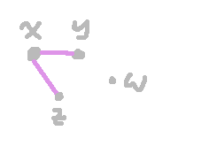
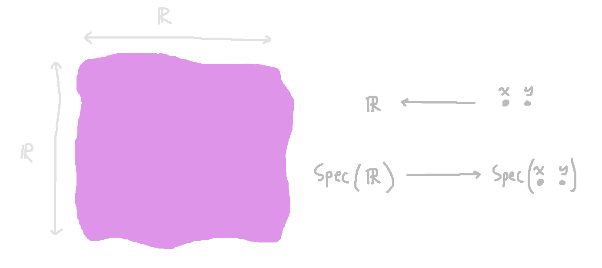
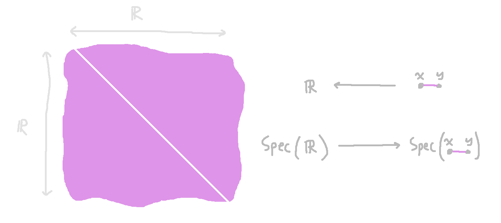
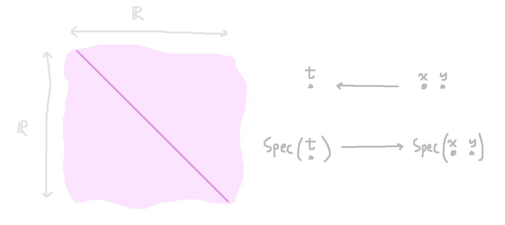

Graph Geometry
A while back I made a post about "algebraic geometry without the algebra", which
in some sense is merely of thinking about the category ${\bf Set}^{\mathrm{op}}$. Recently I noticed
that you can do some fun stuff if you think about ${\bf Grph}^{\mathrm{op}}$, too.
The basic intuitions come straight out of Yoneda-ish reasoning: an object can be understood in terms
of the maps into or out of it. It's normal to think of maps into an object as "parts" of it.
In the category of graphs, maps $1 \to G$ pick out the vertices of the graph $G$ (where $1$ is the one-vertex graph)
and maps ${\bf 2} \to G$ are equivalent to edges in $G$ (where ${\bf 2}$ is the one-edge graph).
What it means to investigate ${\bf Grph}^{\mathrm{op}}$ is to dually understand maps out of $G$ as somehow
representing parts of a mirror-universe version of $G$. The algebro-geometric thing to do is to call this mirror-twin
$\spec(G)$. In this case, a map $G \to H$ is the same thing as a map $\spec(H) \to \spec(G)$, a "$\spec(H)$-shaped point
in the space $\spec(G)$".
Real Points
This is all very abstract; we can make it more concrete.
Give the real numbers $\R$ a graph structure by putting an edge between every two distinct numbers.
This graph is irreflexive: there are no self-edges.
We write finite graphs as a set of their vertices, and write their edges suggestively as inequalities.
For example, we can write the graph

as $\{x, y, z, x \ne y, x \ne z\}$.
Let us ask: what are the graph homomorphisms from $\{x, y\}$, (the
two-vertex, zero-edge graph) to $\R$? We must choose a real number
destination for each of the two vertices. So we get the cartesian
plane.

The object $\spec(\R)$ is a "real-shaped point", and $\spec(\{x, y\})$ is a space that has an $\R^2$-worth of such "points" in it.
What does the one-edge graph look like, as a space? To find out what its real points are,
we ask for the graph homomorphisms $\{x,y,x\ne y\} \to \R$. There are as many of these as there are points in the plane
minus the diagonal:

For to have a graph homomorphism from the one-edge graph to $\R$, we must sent $x$ and $y$ to different real numbers,
because we gave $\R$ the irreflexive complete graph structure.
It should be the case that the "plane minus the diagonal" fits into "the whole plane".
There should be an inclusion map $\spec(\{x, y, x \ne y\}) \to \spec(\{x, y\})$.
But this is the same thing as a graph homomorphism $\{x, y\} \to \{x, y, x \ne y\}$. And that does exist!
It's just the inclusion of the two-vertex graph into the one-edge graph.
What's special about this is that we can say it's the complement of the inclusion of the diagonal.
For comparison, that's the map from the two-element graph to the one-element graph.
Contravariantly, we see that the diagonal itself has the type $\spec(\{t\}) \to \spec(\{x, y\})$.

In what sense is the plane-missing-the-diagonal the complement of the diagonal itself?
I'd like to adapt Definition 2.19
from these
algebraic geometry notes. For this purpose I'll have to cheat and assume $\spec$ actually means
the yoneda embedding $G \mapsto \hom_{\mathbf{Grph}}(G, \hbox{---})$.
We want to say that if $h : \spec(Z) \to
\spec(X)$ is an inclusion of spaces (i.e. a morphism in $\mathbf{Grph}^{\mathrm{op}}$)
then the complement of $Z$ in $X$ is going to be the subspace of $\spec(X)$ that are the morphisms incompatible
with $h$.
So a graph homomorphism $f : Z \to G$ is considered to be in $X\setminus Z$ if and only if there does not
exist $H$ and suitable arrows making
\[\begin{CD}
Z @>{f}>> G \\
@V{h}VV @VV{}V\\
X @>>{}> H \\
\end{CD}\]
a commutative square.
Now we have enough information to make the claim
the graph homomorphism including $\{x, y\}$ into $\{x, y, x \ne y\}$
is the complement of the graph homomorphism taking $\{x, y\}$ to $\{t\}$.
In other words, it "really is" the plane minus the diagonal.
It becomes:
For any $G$, the graph homomorphisms $\{x, y\}$ to $G$ incompatible with $\{x, y\}$ to $\{t\}$
are in bijective correspondence to graph homomorphisms $\{x, y, x \ne y\}$ to $G$. Furthermore,
this bijection is compatible with composition with the map $\{x, y\}$ into $\{x, y, x \ne y\}$.
Topology?
Because of the above reasoning, perhaps we can get away with saying that for any graph homomorphism
$h : G \to H$ we can say that $\spec(h) : \spec(H) \to \spec(G)$ is a closed embedding just in case
$h$ is simply carving out a subspace of $\spec(G)$ by imposing equations between variables... I think
this might be the same thing as requiring $h$ is a regular epimorphism, i.e. the coequalizer of some
pair of morphisms in $\mathbf{Grph}$?
If we could do this, then we could say open embeddings are complements of closed embeddings, and maybe
start developing a notion of open cover, and "scheme" analogous to how the spaces discussed so far are like "affine schemes".
What does this have to do with Rings?
I surmise that each
edge-forcing-an-inequality plays something like the role that $1
\ne 0$ plays in commutative algebra and algebraic geometry, but I
don't have any concrete way of saying this yet.